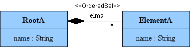
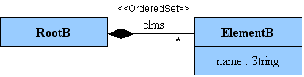

Introduction
This example deals with the refactoring of a simple metamodel. We want to bridge two different versions of a metamodel thanks to a model transformation.
The Metamodels

Metamodel A
The metamodel A is composed of two elements which represent a simple list of named elements.

Metamodel B
The metamodel B is a evolution of metamodel A. It defines the same concepts except RootB lost its name.
Refactoring Transformation
Transformation principles
In this transformation, we want to transform an element RootA into a RootB and to transform an element ElementA into a ElementB. Some additional constraints should be respected:
- The elements order in the list should be kept.
- An ElementB should be created from the name of a RootA. This element is added at the first list position.
- The name of each ElementB should start with 'B_'
To sum up, the created list will contain one more element than the initial list. This additional element is created from the name of the list root. It will be placed at the first position of the list.
Transformation step by step
First, we create the skeleton of the rule "Root". A RootB element is created from a RootA element.
|
We create now the rule called "Element". This rule transforms an ElementA into an ElementB. For the name of each ElementB, the name of the matching ElementA is reused and 'B_' is added to respect our constraint defined in the transformation requirements.
|
For both metamodels, the root element contains the list elements. We can update the rule "Root" with the following code to use automatic traceability support in ATL (i.e. ATL Resolve Algorithm).
|
Thanks to this code, all elements ElementB will be contained in the RootB.
The last requirement of our transformation is to create an additional ElementB from the name of the RootA. This element will be added at the first position of the list.
|
Here is now the complete ATL module transforming a model A into a model B.
|
Conclusion
What we have learnt with this example:
- using automatic traceability support in ATL.
- creating an ordered set.
- using operation on string type.
Some improvements can be done. For example, a helper could be used to factorize the ElementB name creation.
Download

|
ListMetamodelRefactoring |
Source code for the scenario List Metamodel Refactoring. |